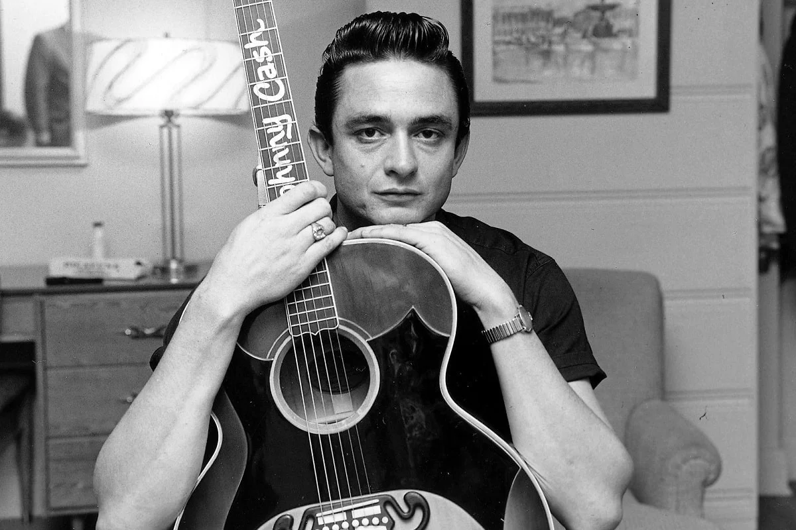

Johnny Cash
Johnny Cash, also known as "The man in black" was an American country singer-songwriter. Most of Cash's music contained themes of sorrow, moral tribulation, and redemption, especially in the later stages of his career.

Johnny Cash, also known as "The man in black" was an American country singer-songwriter. Most of Cash's music contained themes of sorrow, moral tribulation, and redemption, especially in the later stages of his career.
Sign up to become an official Johnny Cash fan!